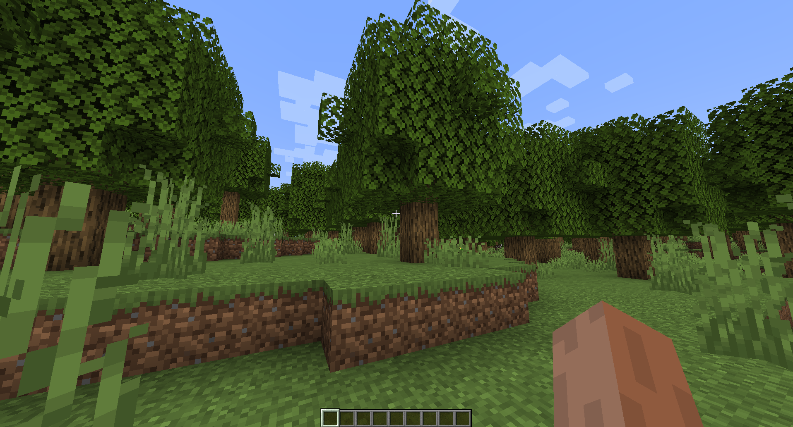

Adding a Structure¶
In this tutorial, we’ll be creating and registering a structure that can generate in the world.
Structures¶
The Structure interface represents a structure that can generate in the world; a section of blocks that generate at a location. Some examples of where structures may be used are:
Grass
Flowers
Trees
Rocks
Structures are generally used to decorate the world after generation.
Creating a Structure¶
To create a structure, create a new class and implement the Structure interface. In this tutorial, we’ll
call our example structure com.example.addon.structure.ExampleStructure. You can call yours whatever you want!
package com.example.addon.structure;
import com.dfsek.terra.api.structure.Structure;
import com.dfsek.terra.api.util.Rotation;
import com.dfsek.terra.api.util.vector.Vector3Int;
import com.dfsek.terra.api.world.WritableWorld;
import java.util.Random;
public class ExampleStructure implements Structure {
@Override
public boolean generate(Vector3Int location, WritableWorld world, Random random, Rotation rotation) {
return false;
}
}
Generating Something¶
Right now, our Structure implementation won’t generate anything. To generate blocks in the world, we can use one
WritableWorld’s many #setBlockState methods. Let’s generate a tree!
Getting a Block State¶
First, we’ll need to get a BlockState to generate. To do that, we’ll need the WorldHandle,
which we can get from the Platform instance. Let’s pass the Platform into our Structure’s
constructor, and use WorldHandle#createBlockState(String) to create a block state!
public class ExampleStructure implements Structure {
private final Platform platform;
public ExampleStructure(Platform platform) {
this.platform = platform;
}
@Override
public boolean generate(Vector3Int location, WritableWorld world, Random random, Rotation rotation) {
BlockState oakLog = platform.getWorldHandle().createBlockState("minecraft:oak_log[axis=y]");
BlockState oakLeaves = platform.getWorldHandle().createBlockState("minecraft:oak_leaves[persistent=true]");
return false;
}
}
Note
If you’re used to the Bukkit API, Terra’s BlockState is roughly equivalent to Bukkit’s BlockData.
We chose the name Block State as it is more accurate to what the object represents, as well as the name
Minecraft itself uses internally.
Warning
If you’re implementing a structure in your addon, you’ll definitely want to get your block state once on
initialization, then use the existing instance in your structure’s #generate method.
We’re getting them in the #generate method to make this tutorial simpler.
It’s generally encouraged to make the block state configurable, as that keeps your addon platform-agnostic, but if you’re set on hard-coding your block states, you can:
Initialize them in the structure’s constructor.
Initialize them in your addon’s entry point and pass them to the structure.
Use the Lazy utility class for lazy initialization.
Generating Blocks¶
Now that we have a block state, let’s place it in the world! To do that, we’ll use the #setBlockState methods of
WritableWorld. Let’s generate a simple tree by generating some leaves, then generating a stick through them:
public class ExampleStructure implements Structure {
private final Platform platform;
public ExampleStructure(Platform platform) {
this.platform = platform;
}
@Override
public boolean generate(Vector3Int location, WritableWorld world, Random random, Rotation rotation) {
BlockState oakLog = platform.getWorldHandle().createBlockState("minecraft:oak_log[axis=y]");
BlockState oakLeaves = platform.getWorldHandle().createBlockState("minecraft:oak_leaves[persistent=true]");
int height = random.nextInt(5, 8); // Trunk will be [5, 8) blocks tall.
GeometryUtil.sphere(
Vector3Int.of(location, 0, height, 0), // Generate leaves at the top of the tree
3, // Leaves will be a sphere of radius 3.
leafLocation -> { // This consumer is invoked once per coordinate in the sphere.
world.setBlockState(leafLocation, oakLeaves);
}
);
for (int y = 0; y < height; y++) { // Iterate over the height.
Vector3Int trunkLocation = Vector3Int.of(location, 0, y, 0); // Generate a part of the trunk here.
world.setBlockState(trunkLocation, oakLog); // Generate an oak log at the location.
}
return true; // Our structure generated correctly.
}
}
Note
If you’re used to the Bukkit API, you may be looking for Terra’s equivalent to the Location class, which
combines a World and a Vector3. The Terra API has no such class. Separating the world from the
position allows for much cleaner integration of more world types.
The Terra API also lacks an analogous class to Bukkit’s Block, for the same reason. Bukkit’s Block is
an even messier combination of a World, a Vector3Int and a BlockState.
Registering the Structure¶
Now that we’ve made our structure, if you compile and install the addon, you’ll see that… nothing happens. That’s because we haven’t registered our structure. If we don’t register the structure, Terra doesn’t know it exists.
Implementing Keyed¶
While it’s entirely possible to register things by providing a RegistryKey instance, it’s generally cleaner to implement the Keyed interface in the object you want to register. This will become especially apparent when you’re registering many of the same type of object at once. The pattern to implement keyed is generally
class Thing implements Keyed<Thing>.
If you’ve worked with Comparable, the idea is similar; the type parameter of Keyed should almost
always be the same as the class it’s implemented in.
Let’s implement Keyed in our example structure:
public class ExampleStructure implements Structure, Keyed<ExampleStructure> {
private final Platform platform;
private final RegistryKey key;
public ExampleStructure(Platform platform, RegistryKey key) {
this.platform = platform;
this.key = key;
}
@Override
public boolean generate(Vector3Int location, WritableWorld world, Random random, Rotation rotation) {
// ... Generation logic
}
@Override
public RegistryKey getRegistryKey() {
return key;
}
}
When an object implements Keyed, it must provide an instance of RegistryKey, the key that identifies it.
We’ll get that instance by putting it in a field set in the constructor.
Creating a Key¶
Now that we have a Keyed structure, let’s register it! Back in our entry point, let’s revisit our
ConfigPackPreLoadEvent listener.
First, let’s create an instance to register. Our structure requires the Platform instance, and a unique RegistryKey instance.
We have the
Platforminstance from dependency injection.We can create a
RegistryKeyinstance from any object which implements Namespaced. In this case, we want to use the namespace of our addon, so let’s use the BaseAddon instance (which we’ve also injected) to create a key:RegistryKey key = addon.key("EXAMPLE_STRUCTURE"); // Create our registry key
Now that we have both objects required to instantiate our structure, let’s create an instance:
public class ExampleEntryPoint implements AddonInitializer {
@Inject
private Logger logger;
@Inject
private Platform platform;
@Inject
private BaseAddon addon;
@Override
public void initialize() {
logger.info("Hello, World!");
RegistryKey key = addon.key("EXAMPLE_STRUCTURE");
ExampleStructure theStructure = new ExampleStructure(platform, key);
platform.getEventManager()
.getHandler(FunctionalEventHandler.class)
.register(addon, ConfigPackPreLoadEvent.class)
.then(event -> {
logger.info("We're loading a config pack!");
});
}
}
Registering the Instance¶
Now that we have an instance, we can finally register it! To do that, we’ll need a registry. We can get that from the ConfigPack provided by ConfigPackPreLoadEvent:
platform.getEventManager()
.getHandler(FunctionalEventHandler.class)
.register(addon, ConfigPackPreLoadEvent.class)
.then(event -> {
logger.info("We're loading a config pack!");
ConfigPack pack = event.getPack();
});
We can then get a registry using #getOrCreateRegistry. We want the Structure registry, so let’s get
it!
platform.getEventManager()
.getHandler(FunctionalEventHandler.class)
.register(addon, ConfigPackPreLoadEvent.class)
.then(event -> {
logger.info("We're loading a config pack!");
ConfigPack pack = event.getPack();
CheckedRegistry<Structure> structureRegistry = pack.getOrCreateRegistry(Structure.class);
});
Now that we have the structure registry, we can finally register our structure instance with #register!
platform.getEventManager()
.getHandler(FunctionalEventHandler.class)
.register(addon, ConfigPackPreLoadEvent.class)
.then(event -> {
logger.info("We're loading a config pack!");
ConfigPack pack = event.getPack();
CheckedRegistry<Structure> structureRegistry = pack.getOrCreateRegistry(Structure.class);
structureRegistry.register(theStructure);
});
Including the Structure in World Generation¶
Now that our structure is registered, it can be used in world generation. Let’s add it to a config pack!
Creating a Feature¶
Use this feature config to create a feature that generates your structure:
id: EXAMPLE_FEATURE
type: FEATURE
distributor:
type: SAMPLER
sampler:
type: POSITIVE_WHITE_NOISE
threshold: 0.03
locator:
type: PATTERN
range:
min: 64
max: 150
pattern:
type: AND
patterns:
- type: MATCH_AIR
offset: 1
- type: MATCH
block: "minecraft:grass_block"
offset: 0
structures:
distribution:
type: CELLULAR
return: CellValue
frequency: 0.03
structures: EXAMPLE_STRUCTURE # Your structure!
Warning
The generation-stage-feature, config-feature, config-locators, and config-distributors core addons
are required for this config! These are all core addons, included by default in Terra, but if you made your
own pack, be sure to depend on them!
Including the Feature in a Biome¶
Now, simply include your new feature in a biome by adding it to the features key! Here’s an example of adding it
to the default pack’s PLAINS biome:
id: PLAINS
type: BIOME
extends: [ EQ_PLAIN, CARVING_LAND, BASE ]
vanilla: minecraft:plains
color: $biomes/colors.yml:PLAINS
tags:
- USE_RIVER
colors:
grass: 0x91bd59
foliage: 0x77ab2f
water: 0x44aff5
water-fog: 0x44aff5
palette:
- GRASS: 255
- << meta.yml:palette-bottom
features:
flora:
- GRASS
- FLOWER_PATCHES
trees:
- SPARSE_OAK_TREES
- EXAMPLE_FEATURE # Our feature!
Conclusion¶
Now launch your Terra installation, and when you create a new world, you should see your structure generating in the biome you chose!
You’re now able to create and register objects to Terra’s registries!